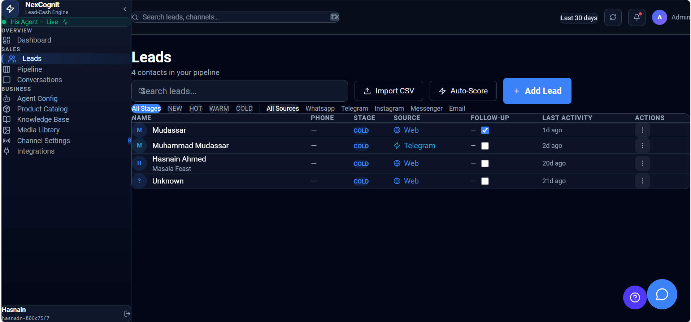

Leads
The Leads page is where you can view and manage the people who have contacted your business through NexCognit. It helps your team review lead details, track status, and decide which leads need attention first.
Leads overview
The Leads page gives teams a clear place to monitor incoming interest and follow up in a structured way. It is designed to help you understand who is engaging with your business and where each lead stands in the journey.

What the Leads page is used for
The Leads page is used to review and manage the people who have reached out through NexCognit. It helps teams see who is interested, understand their current situation, and make sure follow-up happens at the right time.
Lead list overview
The lead list shows the people who have entered your workflow through conversations, forms, or other contact points. Each lead can be reviewed to understand the latest activity, their current status, and the next best action for your team.
Lead status categories
- Hot: High purchase intent. These leads are likely ready for a direct sales conversation or next-step offer.
- Warm: Interested but not yet ready. These leads may need more nurturing or a follow-up later.
- Cold: Low engagement. These leads may need less immediate attention or a different approach.
- New: Recently created and not yet scored. These leads are still being assessed and may need an initial review.
Why lead status helps with prioritization
Lead status helps teams focus on the opportunities that matter most. By understanding which leads are hotter, warmer, or less engaged, your team can prioritize follow-up work more effectively and respond to the highest-value conversations first.
How the Leads page fits into the overall sales workflow
The Leads page sits at the center of the sales workflow. It connects incoming inquiries, ongoing conversations, and follow-up actions so teams can move from initial interest to qualified opportunity in a structured way.
Things to know
- Use the Leads page to track interest and follow-up activity in one place.
- Lead status helps your team focus on the best opportunities first.
- Regular review of the lead list keeps the workflow moving smoothly.